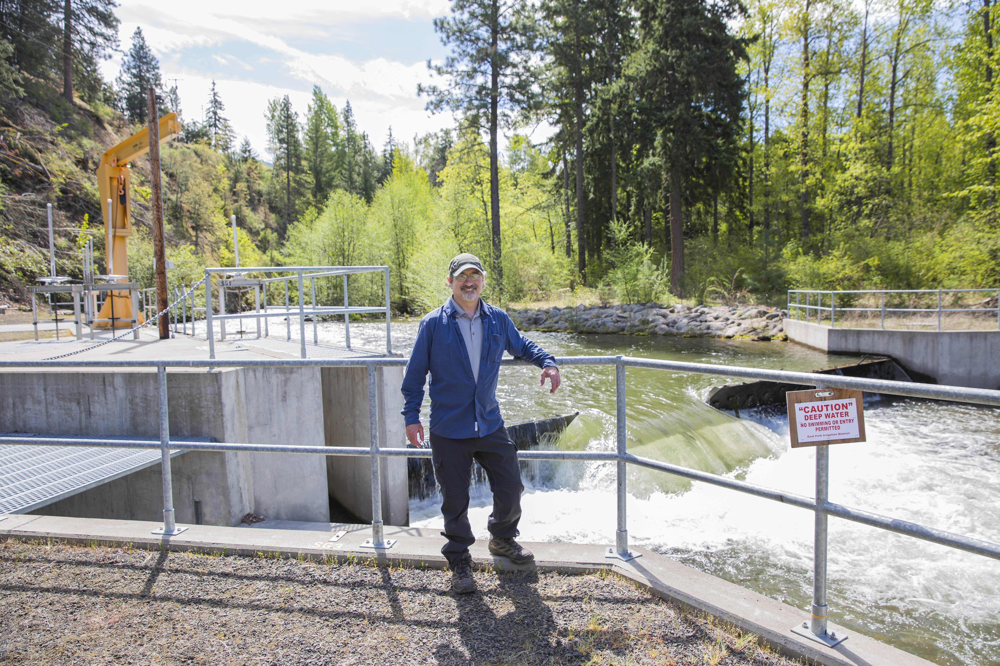
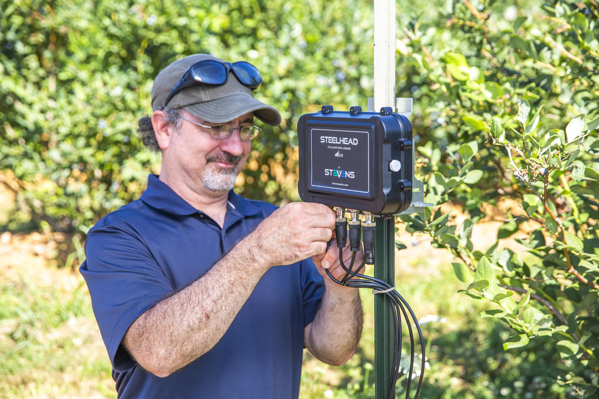
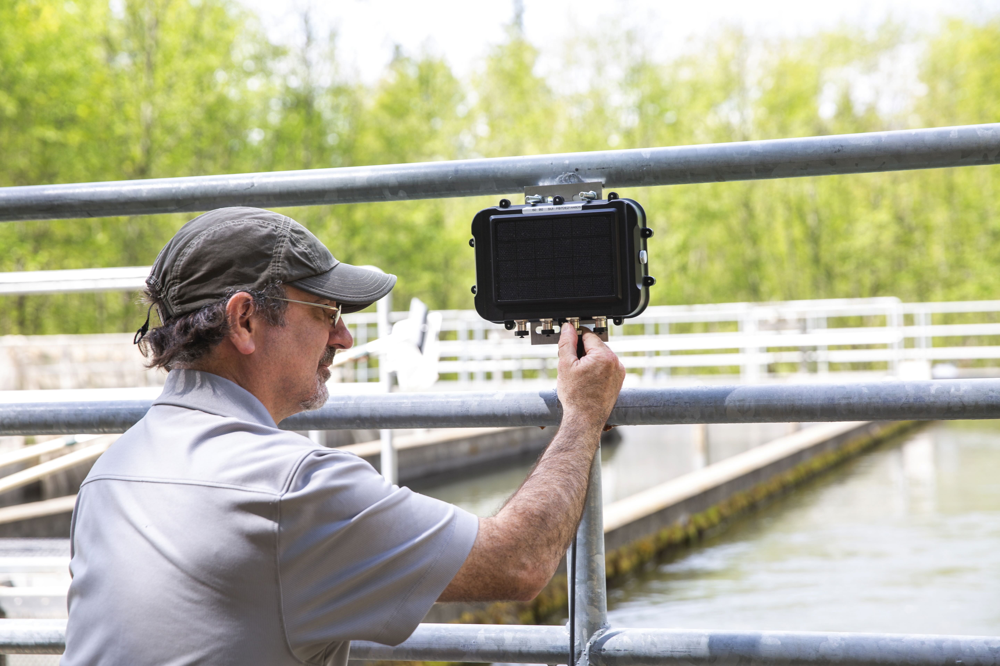

Welcome
I am a multi-disciplinary physical scientist specializing in agricultural and environmental data, sensor technology, soil science, hydrology, and data analysis.
My work combines scientific instrumentation, environmental monitoring, data science, machine learning, and technical business development. I work with customers, researchers, distributors, and other stakeholders to develop practical applications for environmental and agricultural technologies.
This website provides an overview of my professional experience, projects, publications, and technical work.



